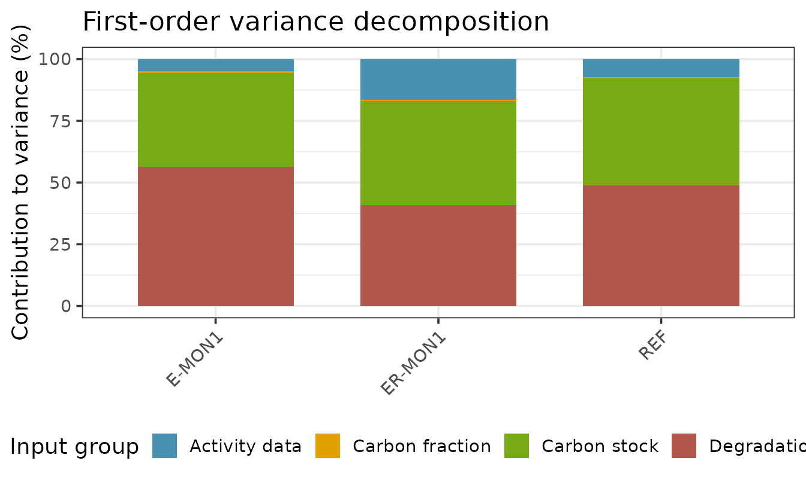
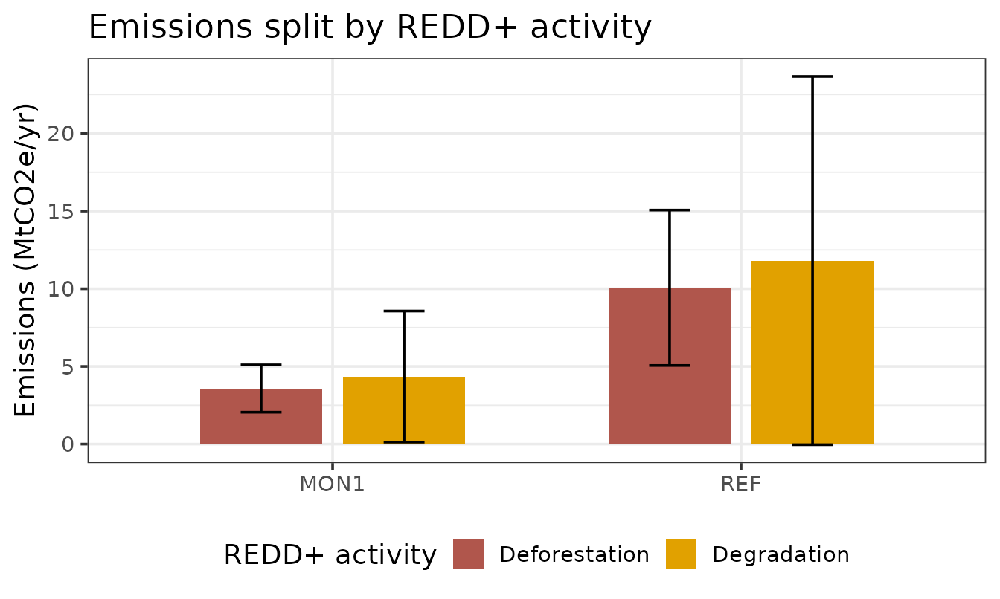

Sensitivity analysis for REDD+ carbon accounting
Source:vignettes/sensitivity-analysis.Rmd
sensitivity-analysis.RmdWhy sensitivity analysis?
A REDD+ emission reduction estimate combines many uncertain inputs:
areas of land use change (activity data, AD), carbon
stocks of each land use, a carbon fraction, and degradation ratios
(together the emission factors, EF). Uncertainty
analysis (see fct_arithmetic_mean2()) tells you how
uncertain the result is. Sensitivity analysis
answers the complementary question: which inputs are responsible for
that uncertainty? This is what tells a country where to invest the
next measurement campaign — improving the input that drives the variance
is the cheapest way to shrink the confidence interval of the reported
emission reduction.
The emission model
For each land use transition, emissions are activity data times an emission factor:
where each carbon stock is built from carbon pools (optionally through a carbon fraction and, for degraded land, a degradation ratio applied to the intact stock). Reference and monitoring emission levels are period aggregates of these transitions, and the emission reduction is their difference:
Because a degraded land use reuses the intact carbon stock, and a global carbon fraction is shared across land uses, some inputs feed several parts of the model at once. A correct sensitivity analysis must respect those shared inputs.
Variance-based sensitivity analysis
The reference framework for global sensitivity analysis is the variance-based (Sobol) decomposition (Saltelli et al. 2008). If the output is a function of independent inputs , its variance decomposes into contributions of each input and of their interactions:
Two indices summarise this:
- the first-order index , the share of variance explained by alone;
- the total index , which also includes every interaction involving .
Sobol indices are usually estimated by Monte Carlo with Saltelli sampling, at a cost of model runs. That is the most general approach and it captures interactions, but it is stochastic and comparatively expensive.
The approach used in mocaredd
The REDD+ emission model is a sum of products (AD × EF),
which is close to linear in each input over its uncertainty range. For
such a model the first-order Sobol indices can be obtained
analytically from a first-order (delta-method)
expansion. For independent inputs,
fct_sensitivity2() computes the partial derivatives
numerically over the same independent inputs used by the Monte Carlo
simulation (carbon pools namespaced by land use, the carbon fraction,
degradation ratios and per-transition activity data), so shared inputs
propagate consistently — perturbing a forest’s biomass changes both its
intact stock and any degraded stock derived from it. The per-input
contributions are then summed into REDD+-meaningful input
groups:
- Activity data — transition areas,
- Carbon stock — the carbon pools of each land use,
- Carbon fraction — the biomass-to-carbon conversion,
- Degradation ratio — the ratios defining degraded stocks.
This is deterministic, essentially free to compute, and consistent with the IPCC Tier 1 uncertainty already reported by the package. Its limitation is that, being first-order, it does not resolve interaction terms; when interactions are expected to be large, a full Sobol analysis is the appropriate alternative (sketched at the end of this article).
Worked example
path <- system.file("extdata/mocaredd-templatev2-simple.xlsx", package = "mocaredd.dev2")
checked <- fct_checkinput(.path = path)
#> Loading data... - progress: 0%.
#> ✓ Tables loaded successfully from template v2
#> Checking column names... - progress: 14%.
#> ✓ Column names: all required columns present
#> Checking table dimensions... - progress: 29%.
#> ✓ Table sizes: all tables have sufficient rows
#> Checking column data types... - progress: 43%.
#> ✓ Data types: all columns have correct data types
#> Checking category values... - progress: 57%.
#> ✓ Category values: all categories are valid
#> Checking unique IDs... - progress: 71%.
#> ✓ Unique IDs: no duplicates or missing IDs found
#> Checking cross-table and intra_table consistency... - progress: 86%.
#> ✓ Cross-table consistency: all references match
#> -- All checks passed.
sa <- fct_sensitivity2(.checked_data = checked)Which inputs drive the uncertainty?
The variance of each reference / monitoring level (REF,
E-MONx) and of each emission reduction
(ER-MONx) is decomposed into the four input groups. The
contributions sum to 100% for each output.
sa$variance
#> # A tibble: 12 × 3
#> output group contribution_pct
#> <chr> <chr> <dbl>
#> 1 REF Carbon stock 43.3
#> 2 REF Degradation ratio 48.9
#> 3 REF Activity data 7.2
#> 4 REF Carbon fraction 0.6
#> 5 E-MON1 Carbon stock 38.2
#> 6 E-MON1 Degradation ratio 56.3
#> 7 E-MON1 Activity data 4.8
#> 8 E-MON1 Carbon fraction 0.7
#> 9 ER-MON1 Carbon stock 42.3
#> 10 ER-MON1 Degradation ratio 40.8
#> 11 ER-MON1 Activity data 16.4
#> 12 ER-MON1 Carbon fraction 0.5
sa$gg_variance
Reading the chart: a bar dominated by Carbon stock or Degradation ratio means the emission factors drive the uncertainty and better field measurements would help most; a bar dominated by Activity data points instead to the land-use change mapping.
Splitting emissions by REDD+ activity
When both deforestation (DF) and degradation (DG) are reported, emissions are split by activity, each with its own uncertainty ():
sa$split
#> # A tibble: 4 × 7
#> period_type activity E E_se E_U E_lower E_upper
#> <chr> <chr> <dbl> <dbl> <dbl> <dbl> <dbl>
#> 1 REF DF 10063039. 3040319. 49.7 5062159. 15063919.
#> 2 REF DG 11811117. 7204693. 100. -39549. 23661783.
#> 3 MON1 DF 3577161. 926229. 42.6 2053649. 5100673.
#> 4 MON1 DG 4347903. 2564672. 97.0 129394. 8566413.
sa$gg_split
This shows not only how much each activity contributes to the total emissions but also how well each is constrained — degradation is often the more uncertain term.
The Sobol alternative
When interactions between inputs matter, estimate variance-based indices by Monte Carlo. The model here is already available as a function of its inputs, so the inputs can be resampled from their distributions and passed through the same calculation chain. Conceptually (not run):
# install.packages("sensitivity")
library(sensitivity)
# model(X): a matrix of input draws -> vector of ER estimates
# built from the same primitives fct_sensitivity2() perturbs
X1 <- sample_inputs(n = 10000) # matrix, one column per input
X2 <- sample_inputs(n = 10000)
si <- sobolSalt(model = redd_model, X1, X2, scheme = "A", nboot = 100)
plot(si) # first-order and total-order indicessobolSalt() returns both first-order and total indices;
comparing them reveals how much variance lives in interactions. For the
mostly multiplicative REDD+ model the analytical first-order
decomposition above is usually within a few percent of the Monte Carlo
first-order indices, which is why it is the default here.